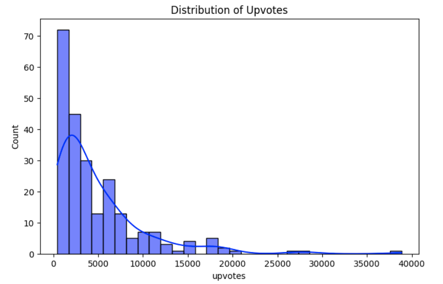
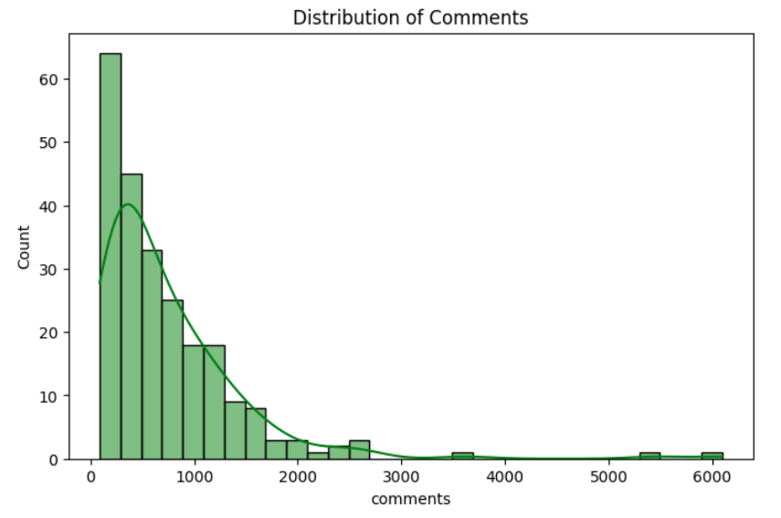
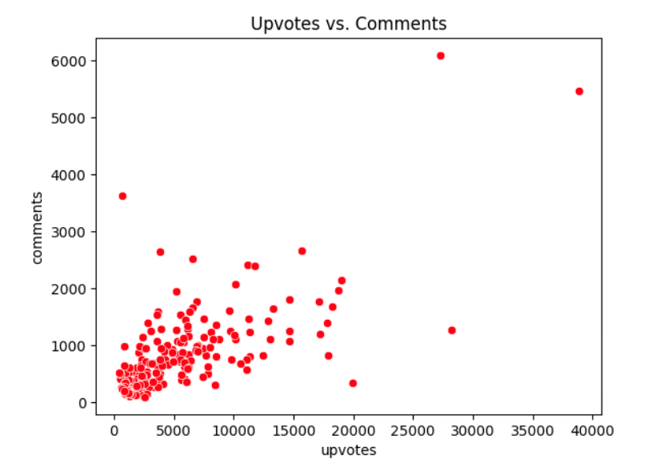
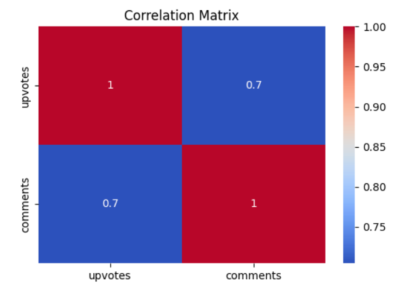
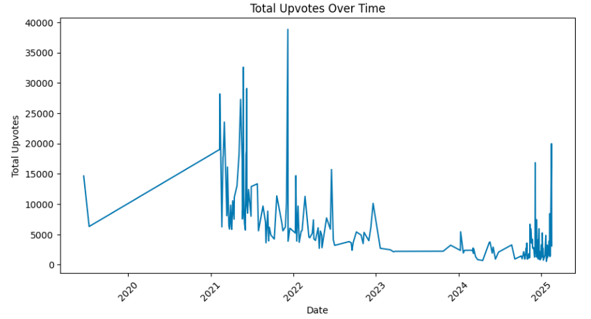
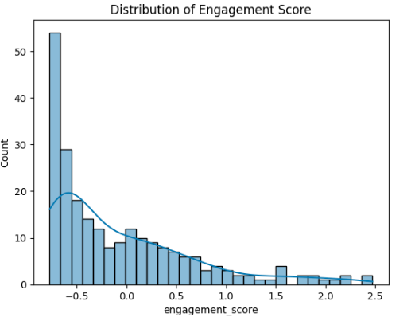
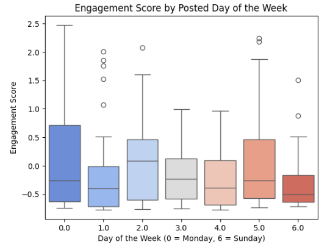
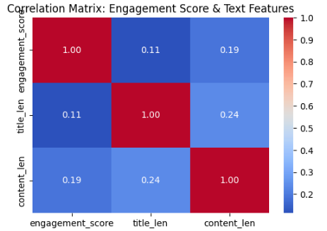

import praw
import pandas as pd
reddit = praw.Reddit(
client_id="your_client_id",
client_secret="your_client_secret",
user_agent="CryptoSentimentApp"
)
def fetch_reddit_posts(coin, num_posts):
subreddit = reddit.subreddit("cryptocurrency")
posts_data = []
for post in subreddit.search(coin, limit=num_posts):
posts_data.append([
post.id, post.title, post.selftext, post.score, post.num_comments, post.url, post.created_utc
])
df = pd.DataFrame(posts_data, columns=["Post_ID", "Title", "Content", "Upvotes", "Comments", "URL", "Timestamp"])
return dfProject Report: Reddit Cryptocurrency Sentiment Analysis
1. Introduction
GitHub Repository
The full project code, dataset, and report can be accessed at:
GitHub Repository Link
Project Overview
This project aims to analyze sentiment trends in Reddit cryptocurrency discussions. The goal is to collect, clean, preprocess, and analyze textual and numerical data from Reddit posts, focusing on Bitcoin-related discussions. The final analysis highlights patterns in engagement metrics (upvotes, comments) and explores their relationship with sentiment and time-based features.
The methodology is designed to be easily adaptable for any cryptocurrency, making it highly relevant for various applications, including trend prediction and even in-game trading strategies. By modifying the focus to different coins, the approach can be extended to analyze sentiment dynamics across multiple assets, offering valuable insights for traders and investors. The integration of sentiment analysis with engagement metrics allows for the development of predictive models that can inform trading strategies or game-based economic simulations. This adaptability ensures that the project remains a versatile tool for both market analysis and interactive financial applications.
Data Source
The data is collected from the r/cryptocurrency subreddit using the Reddit API (praw). We fetched posts mentioning Bitcoin and extracted key metadata including:
- Post Title & Content
- Upvotes & Comments
- Post Creation Time (UNIX Timestamp)
- Post URL
2. Data Acquisition
Methodology
We used the praw library to fetch Reddit posts related to Bitcoin using the subreddit.search() function. The search query was set to “Bitcoin” to ensure relevance.
Code Implementation
Dataset Sample
| Post_ID | Title | Upvotes | Comments | Timestamp |
|---|---|---|---|---|
| 1gqafju | Bitcoin cycle analysis | 3577 | 701 | 2024-01-01 |
| 1h6yoqp | Bitcoin hits 100K | 19972 | 342 | 2024-01-02 |
3. Data Cleaning & Preprocessing
Cleaning Steps
Before analysis, the raw data required significant cleaning:
- Removing special characters & URLs from text fields.
- Handling missing values (replacing NaN values in
contentwith “No Content”). - Dropping duplicates based on post
URL. - Converting timestamps from UNIX format to a human-readable datetime format.
def clean_reddit_data(df):
df = df.copy()
df.columns = df.columns.str.lower().str.replace(" ", "_")
df["timestamp"] = pd.to_datetime(df["timestamp"], unit="s")
df.drop_duplicates(subset=["url"], inplace=True)
df["content"].fillna("No content", inplace=True)
return dfPreprocessing Steps
- Feature scaling (Log Transform for Upvotes & Comments)
- Extract time-based features (Hour, Day, Weekend Flag)
- Categorical encoding for
content
import numpy as np
from sklearn.preprocessing import StandardScaler
def preprocess_data(df):
df = df.copy()
df['day_of_week'] = df['timestamp'].dt.dayofweek
df['hour_of_day'] = df['timestamp'].dt.hour
df['is_weekend'] = df['day_of_week'].apply(lambda x: 1 if x >= 5 else 0)
df['log_upvotes'] = np.log1p(df['upvotes'])
df['log_comments'] = np.log1p(df['comments'])
scaler = StandardScaler()
df[['upvotes', 'comments']] = scaler.fit_transform(df[['upvotes', 'comments']])
return df4. Exploratory Data Analysis (EDA)
Key Insights from Visualizations
Upvotes and comments follow a right-skewed distribution, meaning most posts receive relatively low engagement, while a few highly popular posts accumulate significantly more interactions. This suggests that engagement is unevenly distributed, with viral content driving a large share of the activity.
Engagement differs between weekdays and weekends, with upvotes tending to be higher on weekends. This could be due to users having more free time to browse and interact with posts, leading to increased visibility and participation in discussions.
There is a positive correlation between upvotes and comments, indicating that posts receiving more upvotes also tend to generate more discussion. This suggests that highly engaging content not only attracts approval but also encourages further conversation within the community.
(1)Visualization: Upvotes Distribution
import seaborn as sns
import matplotlib.pyplot as plt
sns.histplot(df['upvotes'], bins=30, kde=True, color='blue')
plt.title("Distribution of Upvotes")
plt.show()
(2)Visualization: Comments Distribution
import seaborn as sns
import matplotlib.pyplot as plt
sns.histplot(df['comments'], bins=30, kde=True, color='blue')
plt.title("Distribution of Comments")
plt.show()
(3)Visualization: Comments And Upvotes
import seaborn as sns
import matplotlib.pyplot as plt
sns.scatterplot(x='upvotes', y='comments', data=df, color='red')
plt.title("Upvotes vs. Comments")
plt.show()
(4)Visualization: Correlation Heatmap
sns.heatmap(df.corr(numeric_only=True), annot=True, cmap='coolwarm')
plt.title("Correlation Matrix")
plt.show()
(5)Visualization: Upvotes over Time
import seaborn as sns
import matplotlib.pyplot as plt
df['timestamp'] = pd.to_datetime(df['timestamp'])
df['date'] = df['timestamp'].dt.date
df.groupby('date')['upvotes'].sum().plot(figsize=(10, 5))
plt.title("Total Upvotes Over Time")
plt.xlabel("Date")
plt.ylabel("Total Upvotes")
plt.xticks(rotation=45)
plt.show()
5. Feature Engineering
We engineered several new features to enhance our analysis:
Added Features
| Feature | Description |
|---|---|
log_upvotes |
Log transformation of upvotes because of right skewed distribution |
log_comments |
Log transformation of comments because of right skewed distribution |
title_len |
Number of words in post title |
content_len |
Number of words in post content |
is_working_hours |
Whether the post was made during business hours (9AM - 5PM) |
engagement_score |
Weighted score of upvotes & comments |
upvote_to_comment_ratio |
Ratio of upvotes to comments |
has_bitcoin |
Whether “Bitcoin” appears in the title |
(6)Visualization: Engagement Score Distribution

(7)Visualization: Engagement Score & Day of Week

(8)Visualization: Correlation Matrix of Engagement Score & Title & Content

6. Challenges & Solutions
Throughout this project, we encountered several challenges that required careful consideration:
- Data Cleaning Complexity: The textual data contained significant noise, special characters, URLs, and inconsistencies. We developed robust cleaning functions to handle these issues effectively, including removing special characters, URLs, and filling missing values in the
contentfield. - Feature Engineering Complexity: Handling the right-skewed distributions of
upvotesandcommentswas another challenge. To address this, we applied log transformations to these features, creatinglog_upvotesandlog_comments, which helped normalize the distributions. - API Rate Limits: We encountered rate limits when fetching large amounts of data. We solved this by implementing request delays.
- Missing Values in Content: Some Reddit posts had missing content fields. We imputed missing values with “No Content”.
- Feature Scaling Choice: Log transformation was chosen for
upvotesandcommentsbecause they were highly skewed. - Collaboration and Integration: Coordinating the efforts of multiple team members, integrating their individual contributions, and ensuring consistency across the project required careful communication and collaboration.
7. Conclusion & Future Work
Summary of Key Findings
- Posts mentioning “Bitcoin” received more upvotes and engagement.
- Engagement was higher on weekends than weekdays.
- There was a strong correlation between upvotes and comments, suggesting highly engaged posts get more interactions.
- The sentiment of posts appears to have a positive effect on engagement.
Conclusion
Sentiment polarity plays a crucial role in driving engagement on Reddit. Posts with a more positive sentiment tend to receive higher upvotes, suggesting that users are more likely to engage with optimistic or bullish discussions. This indicates that sentiment not only reflects market mood but also directly influences how widely content is shared and supported within the community.
Posts that include “Bitcoin” in the title tend to attract more upvotes, likely because Bitcoin remains the most recognized and influential cryptocurrency. This suggests that discussions explicitly mentioning Bitcoin are perceived as more relevant or valuable, drawing greater attention from the community. The effect may also be linked to algorithmic promotion, as posts with trending keywords like “Bitcoin” are more likely to be surfaced to users.
Engagement levels tend to be higher on weekends, possibly because users have more free time to browse and interact with cryptocurrency discussions. This pattern suggests that sentiment analysis and trading strategies could benefit from factoring in time-based trends, as increased activity during weekends may amplify sentiment-driven market reactions.
Future Work
- NLP techniques like LLM-based sentiment analysis help extract meaningful insights from Reddit discussions, identifying key terms and sentiment trends.
- Predictive models can be built to analyze the relationship between Reddit sentiment and Bitcoin price movements, potentially aiding in market forecasting.
- Fine-tuning LLMs for finance-specific sentiment classification can improve accuracy, making sentiment analysis more relevant for trading and investment strategies.
8.Team Contributions
This project was a collaborative effort, with each member playing a crucial role in its success.
- Thomas Bordino initiated the project by acquiring the initial dataset, performing basic data cleaning, and conducting preliminary exploratory data analysis (EDA) to understand the data’s structure and characteristics.
- Yixin Xiao significantly enhanced the data cleaning process, refining EDA, data preprocessing, and feature engineering, laying the groundwork for subsequent analysis.
- Lilly Loghmani further refined the data preprocessing steps, completed the EDA, and played a key role in feature engineering, creating new variables to improve the analysis.
- Wenbo Liu played a crucial role in finalizing the project by refining the remaining details of the initial code base and contributing across multiple elements. He took the lead in writing the README and the final report, as well as writing most of them.